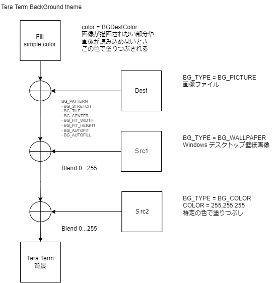

Additional settings / "Visual/theme editor" タブ ([Setup] メニュー)
背景テーマファイル
Tera Term の背景は次のように指定する。

テーマファイルについて(Eterm風半透明ウィンドウ)
- BGPictureTone
-
背景画像(Dest)にデスクトップ画像(Src1)どれぐらいブレンドするか
BGSrc1Alpha = 255 - BGPictureTone
0=デスクトップ画像(Src1)が100%
255=背景画像(Dest)が100%
- BGFadeColor
-
Src2の色
BGFadeColor = BGSrc2Color
- BGFadeTone
- DestとSrc1の合成画像に単色(Src2)をどれぐらいブレンドするか
BGSrc2Alpha = 255 - BGFadeTone
0=単色(Src2)が100%
255=DestとSrc1の合成画像が100%